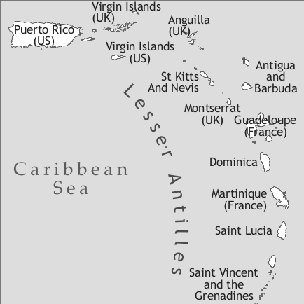

by Paula Prescod

Vincentian Creole (autoglossonym: Vincy) is spoken throughout Saint Vincent and the Grenadines, a group of ex-British dominated islands, located west of Barbados, and south of Saint Lucia. Vincentians from all walks of life use the Creole, or dialect, as it is sometimes referred to, in diverse social, cultural, religious and political circles. However, the constitution of the nation declares that English is the official language. A number of migrant families in North America, England and other Caribbean territories continue to use the Creole. Some Vincentians do not recognize their vernacular as a language distinct from its source language. In their prose and poetry Vincentian writers tend to transcribe Vincentian speech in such a way that they can mirror the English etymology. The writing system adopted in this survey was proposed in the author’s 2004 dissertation. Teachers of primary and junior secondary schools in St Vincent and the Grenadines participated in a workshop aimed at applying and adjusting the writing system.
The islands of Saint Vincent and the Grenadines remained officially unsettled until 1763. Before then, St Vincent, like many of the other Caribbean territories, had already been home to the indigenous Kalinga (Carib) and Arawak-speaking peoples. What is more, before Europeans decided that St Vincent could be of economic interest, a number of Negroes had made St Vincent and the Grenadines their home. A series of shipwrecks off St Vincent and the Grenadines (between 1611 and 1675) brought demographic change to the islands. According to Ellis (1991: 176), the Caribs or Kalinga often came to the rescue of stranded and runaway slaves of Yoruba, Fon, Fanti-Ashanti and Congo origin. In fact, the indigenous Caribs and Arawak cohabited with the African newcomers to St Vincent. It is thought that the Garifuna originated from the unions of African men and Kalinga women. However, Moreau de Jonnès, a French soldier who fought alongside the Garifuna in 1795 and 1796 gives no currency to this line of reasoning. In his report ([1858] 1895: 127), mention is made of Black Caribs whose physical traits resembled those of Ethiopians as they had smooth, long black hair, straight nose and thin lips that in no way resembled those of the Negroes.
Despite Governor de Poincy’s solemn act of 1660 to grant Dominica and St Vincent to the Caribs of the region, following their complaints about the massacres and land dispossession of which they were victims on the other territories (Sirvien 1985: 44), some French planters from Martinique settled clandestinely on St Vincent in 1719 with their African slaves to till the land (Shephard 1831: 23). The ensuing years marked an era of continued dispute between the French and the British to occupy St Vincent and establish plantation slavery.
The British succeeded in gaining a stronghold in 1763 under the Treaty of Paris. At this time, the black population increased drastically (cf. figures for 1763 compared to those of 1764 in Table 1), with slaves being brought directly from the Guinea Coast (Young’s account in Edwards 1810), or repatriated from Barbados (Curtin 1969: 67). The white population tripled (cf. figures for 1763 compared to those of 1764 in Table 1): They too were repatriated from other islands (Sheridan 1985: 455). In an effort to make the territory productive the British proceeded to acquire Carib and Garifuna land, thus heightening tension. Under the command of their chiefs Chatoyer and Duvallé, the Garifuna resisted British domination and facilitated the French takeover in 1779. The British regained possession in 1783 under the Treaty of Versailles. The Garifuna had an affinity for the French as the latter accompanied them in their battles against the British and remained their trading partners until their exile in 1797. The period that followed marked the establishment of plantation slavery on St Vincent, as the British imagined it (Prescod & Fraser 2008).
The deportation of the Garifuna in 1797 to Balliceaux, a Grenadine island just off St Vincent, and their abandonment in Roatan along with anyone who identified as Garifuna meant that the British could introduce large-scale sugar production. It also meant keeping close tabs on the Caribs who had surrendered and who were restricted to the northern tip of the island, where the British administrators kept them under close supervision. This period also marked a turning point in the linguistic history of the nation as slaves were compelled to speak English (Duncan 1955: 35). English then became the language of reference. The substrate languages such as Garifuna, Island Carib and West African varieties, had therefore very little chance of surviving the assimilation practices.
The Vincentian slave population was emancipated in 1834 and an apprenticeship period was set up. Many slaves left the plantations and, in order to compensate for this, the planters turned to Madeira in 1840 (Young 1993: 54), to the red legs or “poor whites” of Barbados (De Albuquerque & Mc Elroy 1999), and to India in 1856 (Look Lai 1993: 276). Table 1 provides some population figures.
|
Table 1. Population of Saint Vincent and the Grenadines through the centuries |
||||||||
|
Year |
Negroes |
Caribs |
Whites |
Mulattoes (Freed) |
Slaves |
Indians |
Portuguese Madeira/Açores |
Sources |
|
1735 |
6,000 |
4,000 |
- |
- |
- |
Shephard (1831) |
||
|
1763 |
- |
- |
695 |
- |
3,430 |
|||
|
1763 |
2,000 |
- |
- |
- |
3,400 |
|||
|
1764 |
- |
- |
2,104 |
- |
7,414 |
Shephard (1831) |
||
|
1782 |
1,276 |
214 |
12,380 |
Archives F 4 13, N° 23 |
||||
|
1796 |
5,200 |
Anderson (1983) |
||||||
|
1797 |
400 |
|||||||
|
1805 |
- |
- |
1,600 |
450 |
16,500 |
Shephard (1831) |
||
|
1812 |
1,053 |
1,482 |
24,920 |
Shephard (1831) |
||||
|
1820 |
24,750 |
|||||||
|
1825 |
1,301 |
2,824 |
23,780 |
|||||
|
1834 |
1,300 |
3,000 |
(22,250) |
2,102 |
Anderson (1983) |
|||
|
1850 |
2,472 |
|||||||
|
Negroes |
Caribs |
Others |
Mulattoes |
Indians |
Total population |
|||
|
2001 |
90,090 (77%) |
3,510 (3%) |
1,872 (1.6%) |
19,890 (17%) |
1,638 (1.4%) |
117,000 (100%) |
2001 Census |
|
Today, Vincentians have daily contact with English via learning institutions, churches and the international, regional and local media. The language of instruction is English. However, formal examination boards authorize secondary exam sitters to write in the Creole if this illustrates direct and authentic expression of the speakers the candidates are quoting. The domains of Creole usage have spread since the late 1990s when the parliamentarians voted in favour of a law that made it easier to obtain licenses in radio communication. As a result, several operators (around 6 in 2005) launched FM stations, which have made way for the advent of interactive talk shows that encourage the propagation of the Creole. The hosts themselves are often native speakers of Vincentian Creole and exercise a measure of linguistic flexibility, adapting their way of speaking to that of callers.
These call-in talk shows have come to reinforce the already powerful influence the various cultural performances, organized among the schools and national clubs, have had on the linguistic landscape of St Vincent and the Grenadines. Cultural events have also been favourable to the diffusion of the Creole. As a result, native and non-native residents of St Vincent and the Grenadines are constantly immersed in the Creole. In their own way, dramatists, songwriters and poets have been able to give free rein to Vincentian parlance, thus keeping it alive and distinct from Standard English. However, this distinction between English and Vincentian Creole is not made to show up in writing. This is due to a number of reasons. For one thing, historically, Vincentian Creole is considered an offshoot of English. Thus, every effort is made to mirror the etymology of English in the writing system. More importantly, the lack of a coherent spelling system for the Creole variety has forced writers to model their writing on the Standard English orthography and to give personal scriptural representations of the spoken form of the Creole. This explains why there is a medley of spellings for any one word or sound. For instance, around is spelt roun or rung in Vincentian literature.
In an effort to have a coherent representation of the Creole, the writing system that was proposed as part of the author’s 2004 dissertation was used to transcribe the corpus collected for the present research. In 2006, with the collaboration of 32 Vincentian teachers of English representing 30 of the 55 local primary and junior secondary schools, it was then tested and adjusted. The revised writing system was included in the workshop report that was submitted to the Ministry of Education. In 2007, a collection of Bible stories related by native Vincentian Creole speakers was released following collaboration between OneStory and SIL International.
| front | central | back | |
| close | i, ii | u | |
| close-mid | ei, ai/oi | o, oo, ou | |
| open-mid | e | ʌ <uh> | |
| open | a, aa |
Three of the five simple oral vowels in Vincentian Creole can be lengthened to provide minimal pairs, as in e.g. slip ‘slip’ vs. sliip ‘sleep’; pat ‘pot’ vs. paat ‘part’; bo ‘bow’ vs. boo ‘bore’. The phoneme /u/ can be lengthened without bringing about a change in meaning, so that skul ‘school’ can be realized as [skul] or [skuul]. The phoneme /e/ is realized with a relatively high F1 value, indicating that it has a tendency to be open. The open-mid vowel /ʌ/ is articulated at a relatively central-back position.
There are four closing diphthongs, three of which are closed by [i], the other closing diphthong being /ou/. Note that [ai] and [oi] are allophones of the same phoneme since morphemes that take [oi] can also be realized with [ai] without any risk of ambiguity: ‘boy’ is realized as [bai], [bwai] or [boi]. There are no opening diphthongs.
There are 22 consonants, two of which are glides.
|
Table 3. Consonants |
||||||||||
|
bilabial |
labio-dental |
apico-alveolar |
alveolar |
post-alveolar |
palatal |
velar |
labio-velar |
glottal |
||
|
plosive |
voiceless |
p |
t |
k |
||||||
|
voiced |
b |
d |
g |
|||||||
|
nasal |
m |
n |
ŋ <ng> |
|||||||
|
fricative |
voiceless |
f |
s |
ʃ <sh> |
h |
|||||
|
voiced |
v |
z |
ʒ <zh> |
|||||||
|
affricate |
voiceless |
tʃ <ch> |
||||||||
|
voiced |
dʒ <j> |
|||||||||
|
liquid |
l, r |
|||||||||
|
glide |
j <y> |
w |
||||||||
The phoneme /z/ is relatively rare in onset position: zu ‘zoo’ and ziro ‘zero’. It is more common in final position: koolz ‘coal’. When they are in the onset position, /k/ and /g/ tend to be palatalized before /e/, /a/, and /u/. The liquid [r] may not have phonemic status following the affricates: jein and jrein can both be glossed ‘drain’, chu and chru can be glossed ‘true’.
Syllable structure: A mere V or any combination of CV or VC can constitute a syllable. CCCV structures obligatorily have a liquid or a glide in the third position and an unvoiced plosive in the second position: skru ‘screw’, spwail ‘spoil’, strent ‘strength’. A cluster of 3 consonants can follow the nucleus, the condition being that the “nasal/liquid + unvoiced plosive + s” ordering should be respected as in muhmps ‘mumps’, ants ‘ants’, jingks ‘jinx’ and wilks ‘top shell’.
In polysyllabic words, stress is generally assigned to the first syllable (cf. Prescod 2006: 61), failing which, stress falls on the syllable that contains a long vowel or a diphthong: teliˈfoon ‘telephone’ and on the syllable before -shan and -zan: badaˈreishan ‘trouble’, teliˈvizan ‘television’.
Vincentian Creole nouns are invariable. The independent lexemes man (masculine) / oman (feminine) can precede the nominal to indicate natural gender: man-dakta, ‘male doctor’; oman-dakta ‘female doctor’. Sometimes, a lexeme borrowed from the lexifier is used alongside the generic term to indicate natural gender, generally as regards animals: ram-goot ‘ram’, yo-goot ‘ewe’.
The definite (di, i) and indefinite (a, wan) articles find their source in the lexifier the and a/one. They are preposed to the nominal.
Vincentian Creole nouns are typically unmarked for number, but speakers may resort to specific devices to dispel ambiguity for the listener. The most used device for number marking is postposing dem, a dem or an dem to the nominal on condition that the definite article precede the noun: di pikni an dem ‘the children’. The three forms tend to be interchangeable although dem (3PL pronoun) is perceived as less basilectal. The pluralizing morphemes /s/, /z/, /iz/ are borrowed from the lexifier. Some nominals may appear to bear the final pluralizing morpheme when in fact they do not have plural reference. In fact, these nominals can combine with the singularizing determiner wan. Such is the case with nominals that are generally found in large numbers: wan ants ‘an ant’, wan machiz ‘a match’, wan piiz ‘a pea’. Additionally, these nominals can be given plural reference by post-posing an dem: di piiz an dem ‘the peas’.
Some words have only [+plural] lexical entries. These cannot combine with the determiner wan. These nominals are usually used as bare nominals or combined with ‘some’: yaaz ‘sores’, klooz ‘clothes’. Generic noun phrases are generally bare (1). However, all bare nouns do not yield generic readings. Example (2) has only specific reference.
(1) Shaat kuht duhz breik man bak.1
short cut hab break man back
‘You can end up in harmful situations if you try to take shortcuts.’ (proverbial; lit. ‘Shortcut breaks a man’s back’)
(2) Hi shoda duhn bi praim minista bifoo nou.
he should.irr incep be prime minister before now
‘He should have been the Prime Minister long before now.’ (Prescod fieldwork 2004)
The adnominal demonstratives dis and da(t) indicate proximity and distance. The particles ya, de and (ova) yaanda may then follow the nominal: dis ting ya ‘this thing here’; da ting de ‘that thing there’; da ting ova yaanda ‘that thing way over there’. Yanda only combines with the distal marker da, and never dis. The pronominal demonstratives are dis/ dis-ya, da(t)/da(t)-de and da(t)-de-yaanda.
There are two sets of adnominal possessives as shown in Table 5. The unstressed paradigm can be identified with the three paradigms of personal pronouns provided in the same table. Both sets of adnominal possessives precede the noun (foyu pikni ‘your child’ or yo pikni ‘your child’). The pronominal possessives are expressed combining the stressed adnominal possessive with the particle oon:
(3) Mek yo na tek foyu oon?
make 2sg neg take your own
‘Why didn’t you take yours?’
Possessor noun phrases display two patterns. In the first case, two nominals are juxtaposed following the possessor + possessee pattern as in (4). In the second case, the construction follows the possessee + fo + possessor pattern, as in (5). Both patterns are equally common and interchangeable.
(4) di oman pikni
the woman child
‘the woman’s child’
(5) di pikni fo di oman
the child for the woman
‘the woman’s child’
Adjectives are invariant and precede the noun. Comparative and superlative adjectives may be inflected or analytical or both, as illustrated in Table 4. Dan ‘than’ is the standard marker.
|
Table 4. Morphology of comparative and superlative adjectives |
|||
|
adjective |
comparative of superiority |
superlative |
morphological type |
|
bad ‘bad’ |
wos dan ‘worse’ |
di wos ‘the worst’ |
inflected |
|
mo bad dan |
analytical |
||
|
di badis |
inflected |
||
|
wosa dan, mo wosa dan |
di wosis, di moos wosis |
inflected, inflected + analytical |
|
|
taal ‘tall’ |
taala dan ‘taller’ |
di taalis ‘the tallest’ |
inflected |
|
mo taala dan |
di moos taalis |
inflected + analytical |
|
|
tosti ‘thirsty’2 |
tostiya dan ‘thirstier’ |
di tostiyis ‘the thirstiest’ |
inflected |
|
mo tostiya dan |
di moos tostiyis |
inflected + analytical |
|
Source: Adapted from Prescod (2004: 129)
In comparative constructions of equality, the adjective is unmarked and the standard is preceded by laik ‘like’ as in i taal laik mi ‘He/She is as tall as I am’.
Dependent and independent personal pronouns are almost identical, i.e. the paradigm of independent personal pronouns can be found among the dependent pronouns.
|
Table 5. Personal pronouns and adnominal possessives |
|||||
|
dependent pronouns |
independent pronouns |
adnominal possessives |
|||
|
subject |
object |
stressed |
unstressed |
||
|
1sg |
mi / a |
mi |
mi |
fomi |
mi |
|
2sg |
yo / yu |
yo / yu |
yu |
foyu |
yo |
|
3sg (m) |
i / hi |
i / hi / uhm |
hi |
fohi |
i / hi |
|
3sg (f) |
i / shi |
i / shi / uhm |
shi |
foshi |
i / shi |
|
1pl |
aawi / wi |
aawi / wi |
aawi / wi |
fowi / aawi |
wi |
|
2pl |
aayo /yaal |
aayo /yaal |
aayo /yaal |
foyu / aayo |
yaal |
|
3pl |
dem / de |
dem / de |
dem |
fodem |
dem / de |
Neither the 1sg subject pronoun a nor the 3sg object pronoun uhm can show up in any other paradigm. Uhm cannot appear in environments that are stressed or independent. This is also why the 3sg gender-neutral pronoun i cannot be used as an independent form. Whereas hi and shi are [+human] and gender specified, i and uhm refer to [±human], [±animate], [±concrete].
(7) If yo a lok fo chobl yo go get uhm.
if 2sg prog look for trouble 2sg fut get 3sg
‘If you are looking for trouble, you will find it.’
The choice between the alternative plural pronoun forms depends on register: aawi, aayo and dem are located on the far end of the basilectal range.
|
Table 6. Tense-aspect markers |
||
|
lexical aspect |
aspect/tense |
|
|
Ø |
dynamic verbs |
perfective past |
|
stative verbs, adjectival predicate |
simple present |
|
|
duhz |
all predicates |
habitual present generic/simple present |
|
duhn |
dynamic verbs |
completive past |
|
stative verbs, adjectival predicate |
continuative/inceptive |
|
|
bin, did (meso) |
dynamic verbs |
simple past past-before-past |
|
stative verbs, adjectival predicate |
simple past |
|
|
bin duhn / did duhn |
dynamic verbs |
completive past |
|
stative verbs, adjectival predicate |
continuative/inceptive past |
|
|
a |
dynamic verbs |
progressive present future habitual present |
|
stative verbs, adjectival predicate |
habitual present generic present |
|
|
de a |
dynamic verbs |
progressive present |
|
duhz de a |
dynamic verbs |
habitual progressive present |
|
bin de a |
dynamic verbs |
progressive past |
|
go |
all predicates |
future |
|
go duhn |
dynamic verbs |
perfective future |
|
go duhn |
stative verbs, adjectival predicate |
continuative/inceptive future |
|
(bin/did) yuuz tu |
all predicates |
habitual past |
Table 6 suggests that there is a complex system of tense and aspect in Vincentian Creole. The notion of lexical aspect is central to determine which verbs can combine with the different tense and aspect markers.
Unmarked verbs do not have the same tense readings depending on whether they are dynamic verbs, statives or adjectival predicates. Zero-marked statives and adjectival predicates yield a simple present interpretation, whereas unmarked dynamic verbs yield a perfective past reading. For a dynamic verb to have a present reading it must be pre-modified by duhz from English does (8).
(8) Wan-wan duhz fol baaskit.
one-one hab full basket
‘Little by little things get done.’ (generic reading possible)
Another aspectual marker that comes from do in English is duhn ‘done’. Again, it yields different readings for dynamic verbs (9) as opposed to stative verbs and adjectival predicates (10). Any combination of a non-dynamic predicate with duhn gives the idea of a process whose inception is being focused on and where one needs to stress the unfinished, continuative result or situation (10).
(9) Yes Seira, evriting did duhn sain an siil an dileva.
yes Sara, everything pst comp sign and seal and deliver
‘Yes Sara, everything had been signed, sealed and delivered.’
(10) Shi duhn lang an taal aredi se shi a wei hai hiil.
3sg incep long and tall already say 3sg prog wear high heel
‘She is already very tall, yet she is wearing high heels.’
The putative progressive marker yields progressive aspect only with dynamic verbs. Thus, the combinations with de a, (bin de a, duhz de a) only appear with dynamic predicates (11).
(11) Paal de a baal.
Paul prog bawl
‘Paul is crying.’
|
Table 7. Modal particles |
||
|
Type of modality |
particle |
English equivalent |
|
deontic (obligation/necessity) |
mos hafo/gafo buhngfo fo poostu shod kyaa(n) |
‘must’ ‘have to’ ‘bound to/have to’ ‘supposed to’ ‘supposed to/should’ ‘should’ ‘should not’ |
|
deontic possibility |
kod |
‘can’ |
|
epistemic (probability) |
mosi mait |
‘may (have)/probably’ ‘might’ |
|
epistemic (positive likelihood) |
mós |
‘will definitely’ |
|
epistemic (negative likelihood) |
kyaa(n) |
‘can’t’ |
|
volition (future) |
go |
‘will’ |
|
volition (past) |
goo |
‘tried/intended to’ |
Modal particles can combine quite easily with tense and aspect particles.
(12) Mi duhz hafo de a wuhk.
1sg hab have.to prog work
‘I usually have to be working.’
(13) Yo mosi duhz kyaa hei.
2sg mod hab can’t hear
‘It is probably impossible for you to understand.’
The morpheme duhz suggests this is always the case in any similar situation.
(14) A man duhz kyaa res a dei taim.
indf man hab can’t rest prep day time
‘One can’t rest during the day.’ =generic negative likelihood
The particle a cliticizes with wod ‘would’, kod ‘could’, mait ‘might’ and shod ‘should’ to express counterfactuals.
(15) If i bin no i woda duhn rich.
if 3sg pst know 3sg would.have comp reach
‘If he had known, he would have already arrived.’
Sentential negation is expressed by na, which typically precedes all tense, aspect and modality markers.
(16) Pikni yo na fo chruhkshan.
child 2sg neg for aggressive
‘Child, you should not be aggressive.’
However, some markers attract the clitic -n rather than the independent preposed negation particle na. This is so if the negative particle could be integrated into the tma marker, reminiscent of the equivalents used in the lexifier. Examples are duhz, duhzn ‘doesn’t’; muhs, muhsn ‘mustn’t’; kyaan ‘can’t’, kod, kodn, ‘couldn’t’; wod, wodn ‘wouldn’t’. Completive duhn follows the negator, whereas inceptive/continuative duhn may precede or follow it (17).
Vincentian Creole participates in negative concord. Negative indefinite pronouns that are part of the verb phrase must co-occur with sentential negation (18). When the negative indefinite is subject of the sentence, sentential negation is optional (19).
(18) Hi na du nuhtn fo help nobadi.
3sg neg do indf.thing for help indf.body
‘He didn’t do anything to help anybody.’
(19) Nobadi (na) si mi.
indf.body (neg) see 1sg
‘Nobody saw me.’
Predicative adjectives (20) and predicative locative phrases (21) do not require the copula, whereas predicative noun phrases (22) do.
(20) Hi dootish.
3sg stupid
‘He is stupid.’
(21) Di pleit (de) in di seif.
def plate (loc.cop) in def safe
‘The plate is in the safe.’
(22) Hi a wan pasta.
3sg cop indf pastor
‘He is a pastor.’
The copula also surfaces as a focalizer either before the np or the relative pronoun in relative clauses where the topic is foregrounded.
(23) A di man hu se so.
foc def man rel say so
‘It was the man who said that.’
(24) Di man a hu se so.
def man foc rel say so
‘The man is the one who said that.’
Vinentian Creole has an SVO word order with neither the subject nor the object being case-coded. In ditransitive clauses, the indirect object precedes the direct object (25). This is quite unlike the preference for the direct + indirect object ordering observed in the lexifier. However, if a complementizer is used to introduce the recipient, the direct object immediately follows the verb (26). In this case, the recipient will typically be introduced by ge.
(25) Di man ge hi pikni plenty moni.
def man give 3poss child plenty money
‘The man gave a lot of money to his child. / The man gave his child a lot of money.’
(26) I bai kaa ge shi.
3sg.sbj buy car give 3sg.obj
‘He bought her a car. / He bought a car for her.’
There is an expletive subject pronoun i which can be avoided, since the same sentence can be full-np headed.
(27) I ha/ga plenti waata in di skuul yaad.
exp have/get plenty water in def school yard
‘There is a lot of water in the school yard.’
(28) Plenti waata (de) in di skuul yaad.
plenty water (loc.cop) in def school yard
‘There is a lot of water in the school yard.’
There is no morphologically marked passive voice. Unmarked verbs can be used as counterparts of English passives.
(29) I leta duhn sen.
def letter compl send
‘The letter has been sent.’
Reflexivization is obtained via the use of lexical reflexives, body parts and the intensifier self.
The lexical reflexives are limited to verbs of grooming (30). This strategy is not pervasive. Body parts can be used in an almost superfluous way to express reflexivizaton as in (31) and (32). The most common reflexivization strategy involves the use of the intensifier self, post-posed to any of the personal pronouns apart from a, as in (33) and (34).
(30) Dem de a beid.
3pl prog bath
‘They are washing themselves.’
(31) Dem de a beid dem skin.
3pl.sbj prog bath 3pl.poss skin
‘They are washing themselves.’
(32) Mi na a bada mi brein.
1sg neg prog bother 1sg.poss brain
‘I do not bother myself (lit. I am not bothering my brain).
(33) I a taak tu iself.
3sg prog talk to 3sg.self
‘He/She is talking to him/herself.’
(34) I gyeli juhs a fuul shiselfi.
the girl just prog fool 3sg.self
‘The girl is just fooling herself.’ (Prescod 2004: 93)
The reciprocal voice is lexically marked with wan anoda (35) or neks tugyeda (36). The latter is limited to contexts where locality is expressed.
(35) Dag an kyat na a liv god wid wan anoda.
dog and cat neg prog live good with one another
‘Dogs and cats do not live well with each other.’
(36) Dem de a sliip neks tugyeda.
3pl.sbj prog sleep next together
‘They are sleeping next to each other.’
Causative voice is expressed via mek. The causee appears between the causative morpheme and the main verb.
(37) Na mek mi ratid.
neg make 1sg angry
‘Don’t make me angry.’ (ratid < English wrath)
In content questions, the question word is fronted (38). At times, it remains in situ (39).
(38) Wen aawi a go si yo?
when 1sg.sbj fut go see 2sg.obj
‘When are we going to see you?’
(39) Aawi a go si yo wen?
1sg.sbj fut go see 2sg.obj when
‘When are we going to see you?’
Polar questions resemble declarative statements except for their rising intonation pattern.
The particle a is used in focus constructions. It appears left of the focused element, which may be an np, a vp, a pp, a relative pronoun, etc. Except for the relative pronoun which remains in situ, all other focused elements appear clause initially (cf. example 24 above).
The coordinating conjunctions are an ‘and’, buh/buht ‘but’ and aa ‘or’.
In object clauses, verbs of speaking and perception are followed by the complementizer clause da hou ‘that how’.
Adverbial clauses are introduced by bifoo ‘before’, aafta ‘after’/‘when’, wen ‘when’, if ‘if’, kaa/bikaa ‘because’. Other reflexes of English adverbials may surface in situations parallel to both systems. The intensifier self is used in contexts where English if surfaces, as in concessive clauses with even if: iivn self i kaal ‘even if he/she calls…’.
Relative pronouns hu, we, hufa follow the head np. The pronouns themselves have different realizations depending on the register and the context.
|
Table 8. Relative pronouns |
|
|
English |
|
|
we, wa, da |
‘which, that’ |
|
hu, we, da |
‘who, that’ |
|
we, da, we paa |
‘where’ |
|
hufa |
‘whose’ |
|
wen |
‘when, that’ |
All positions can be relativized in Vincentian Creole. Relativized elements generally leave no trace in the relative clause. A copy pronoun may, however, appear outside the embedded clause, i.e. in the main clause. It always copies the topic, but never the relativized element. The copy pronoun does not operate as a relativization strategy, but rather as a discourse marker whose role is to remind us of the topic, which becomes distanced from the predicate.
Prepositions are stranded when oblique constituents are relativized.
(41) Di bai we mi tel yo bout liv de.
def boy rel 1sbj tell 2obj about live there
‘The boy I told you about lives there.’ (Prescod 2004: 207)
When relativization accompanies foregrounding, only locatives can be dislocated from sentence-final position.
(42) A pan buhlk ship we di bai mek aal dat moni.
foc on bulk ship rel def boy make all that money
‘It was on a cargo-ship that the boy earned all that money.’ (Prescod 2004: 207)
Nominal complementation may be achieved via the use of fo < English for.
(43) Mi ha fifti dalaz fo spen.
1sg have fifty dollars comp spend
‘I have fifty dollars to spend.’
This construction is quite similar to that of purpose clauses but differ in their interpretations, since nominal complements are similar to reduced relative clauses (‘which I can/want to spend’). In purpose clauses, the complementizer pivots the goal sought after (‘in order to bake’).
(44) Shi hafo go a Back Street fo beik.
3sg have.to go loc Back Street comp bake
‘She has to go to Back Street to bake.’
In the domain of morphology, derivation is relatively productive. Suffixation and conversion participate in the formation of deverbal nouns chapv ‘chop’/ chapiin ‘a cutlass’; kokv kokn ‘a social meal’ <English cook (Prescod 2008: 345, 347).